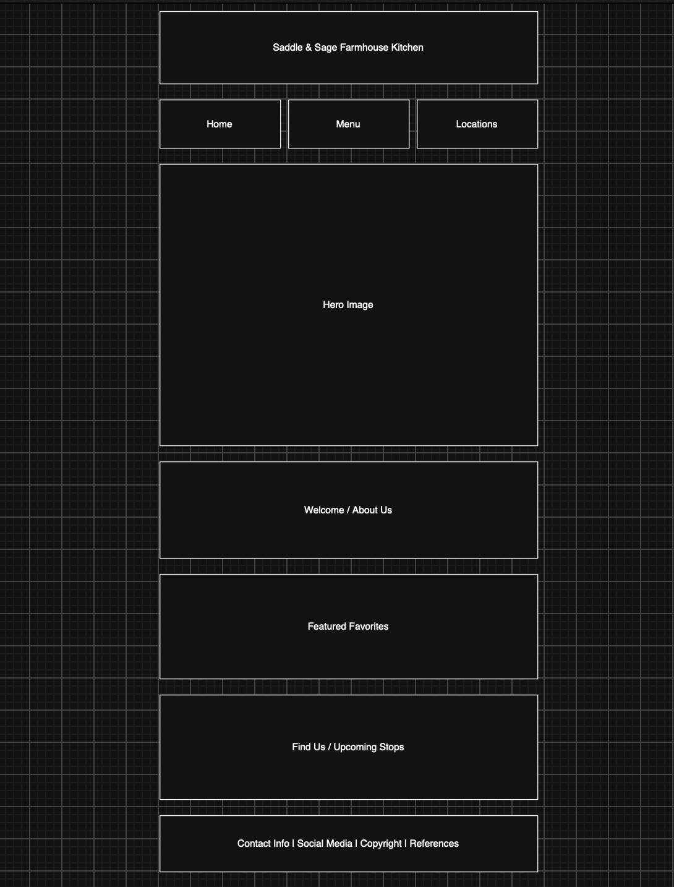
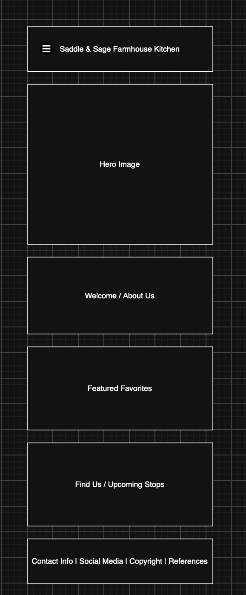

Site Name: Saddle & Sage Farmhouse Kitchen
My family is currently in the planning stages of starting a family food truck business. The name of that business derives from the ranch and country atmosphere of the White Mountains area that we reside in.
Site Purpose:
The purpose of this site is to provide information about Saddle & Sage Farmhouse Kitchen, including our current menu, upcoming locations and events, and information about our family-owned mobile kitchen.
Scenarios:
- What food items are currently available?
- Where will Saddle & Sage be serving next?
Color Scheme:
- Warm Cream (#F4EBDD)
- Espresso Brown (#3B2412)
- Sage Green (#6F7655)
- Saddle Tan (#A66A32)
Typography:
- Rye -- Headings and branding
- Roboto -- Body text and navigation
Wireframes:
Large View

Small View
